Ya hemos visto algunos ejemplos con la utilización de controles como Button, Label y TextField escritos desde código y utilizando, en alguna ocasión el entorno gráfico para que sea más rápido y sencillo la creación de las ventanas.
A partir de ahora utilizaremos SceneBuilder para los ficheros FXML.
Además de esta forma empezamos a utilizar el modelo de programación de MVC (Modelo Vista Controlador) de forma definitiva, y los diseñadores pueden comenzar a diseñar de forma paralela o anticipada, pero sobre todo independiente de los datos y su control.
Más adelante veremos como utilizar ficheros CSS para darle estilo a nuestro escenario y a sus componentes.
Comenzamos creando el proyecto como Java with Ant -> Java Application.
IMPORTANTE: Un proyecto JavaFX -> JavaFX FXML Application solo funciona con JDK 1.8
Le cambiamos el nombre al proyecto, por ejemplo ConversorMoneda.
Añadimos la librería de JavaFX a nuestro Proyecto:
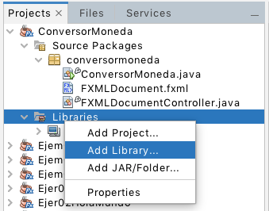
IMPORTANTE: recuerda cambiar las propiedades del proyecto para que se encuentre la librería y se pueda ejecutar.
Tenemos que crear la estructura del Modelo Vista Controlador (MVC):
- ConversorMoneda.java (nuestro programa principal)
- FXMLDocument.fxml (nuestra Vista)
- FXMLDocumentController.java (nuestro Controlador)
En nuestro programa principal añadimos el escenario, la escena y lo mostramos:
public void start(Stage stage) throws Exception {
Parent root = FXMLLoader.load(getClass().getResource("FXMLDocument.fxml"));
Scene scene = new Scene(root);
stage.setScene(scene);
stage.show();
}
public static void main(String[] args) {
launch(args);
}Para añadir la Vista y el Controlador, nos colocamos en el package y añadimos un nuevo fichero FXML (ya se ha visto en otro apartado de este tema), indicando que queremos el controlador. El CSS lo dejaremos por el momento.
Más adelante podremos colocar cada tipo de fichero en un directorio o en un package.
Y con el botón derecho del ratón sobre el fichero FXMLDocument.fxml seleccionamos la opción Open
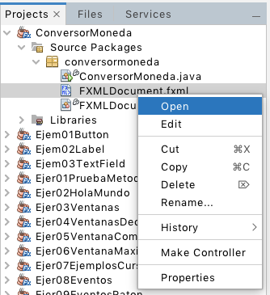
Si el entorno está bien configurado y hemos añadido la ruta de SceneBuilder se abrirá la aplicación para que podamos diseñar nuestra vista:
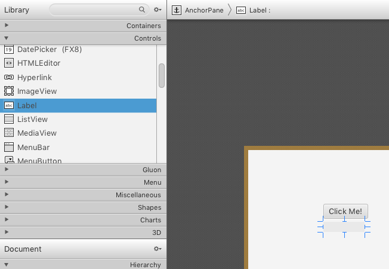
Añadimos una etiqueta (Label), la colocamos y modificamos sus propiedades iniciales (texto, fuente, tamaño, color, alineamiento,...), en el ejemplo hemos puesto el texto "Introduce la cantidad en euros" a 18px
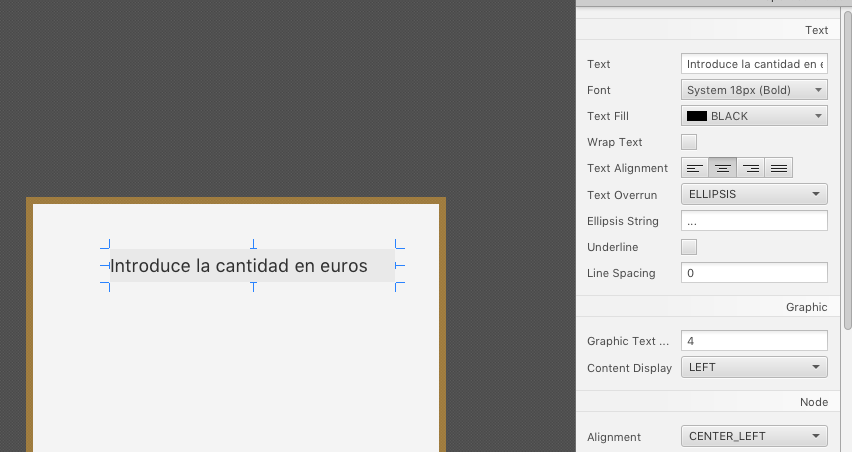
Añadir un TextField, justo debajo de la etiqueta anterior, puedes poner como texto un cero, pero lo que no debes olvidar es escribir si id en la sección code, este nombre será utilizado para controlar este nodo (control) desde el fichero Controlador (en el ejemplo hemos puesto euros en fx:id de Code del TextField)
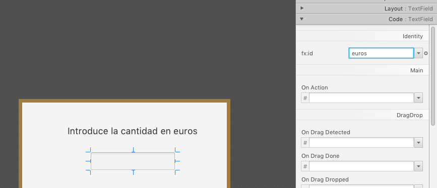
Hacemos lo mismo con un Button, cambiamos el texto a "Calcular" y otras propiedades, y de nuevo, es necesario marcar su fx:id, en este caso le hemos llamado btnCalcular
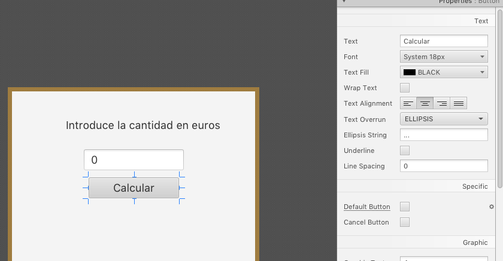
Añadimos otra etiqueta (Label) para mostrar el resultado de la conversión de moneda, a esta etiqueta le pondremos como fx:id lbLibras, y como texto "0 Libras"
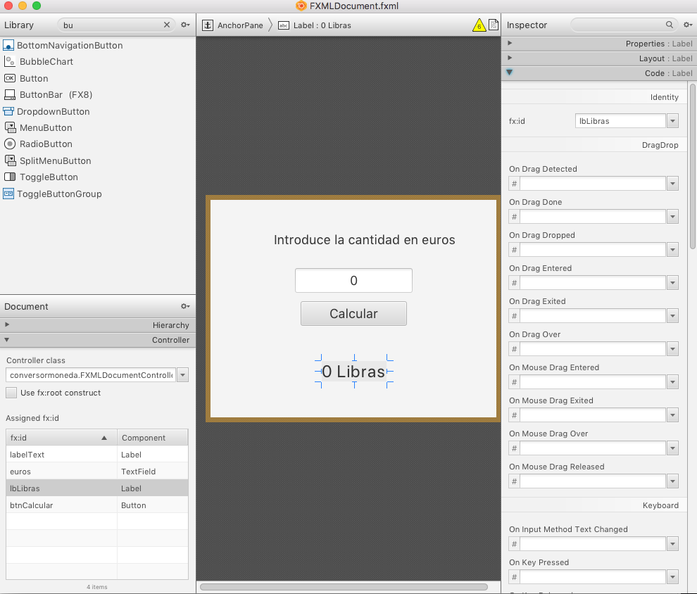
Debemos comprobar en la parte izquierda, abajo, en la sección Controller, el controlador de esta vista es el fichero FXMLDocumentController.
Si ejecutamos nuestro proyecto mostrará nuestra vista, pero aún no tendrá ninguna funcionalidad
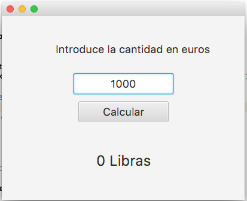
Editamos el fichero FXMLDocumentController.fxml,
IMPORTANTE: y lo primero que debemos hacer es declarar los objetos de la vista que vamos a utilizar, para ello escribimos "@FXML" en la linea anterior de la declaración (en este cado lbLibras y euros, un Label y un Button respectivamente) sus nombres deben ser los id especificados en la Vista.
Modificamos el método que maneja el evento de hacer click sobre el botón, en este caso le hemos llamado handeBtnConverAction, recogemos el valor del TextField y lo convertimos a float (es un String), multiplicamos por el cambia a libras, y colocamos el resultado (convirtiendo el float a String) en la etiqueta de la vista.
Cuidado con los imports, los que nos interesas son los de import javafx....
El controlador quedaría así:
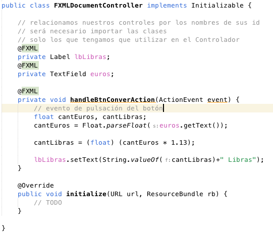
Solo nos queda enlazar el método a la acción del botón, para ello volvemos a SceneBuilder con la vista y en la pestaña Code del botón, en el campo On Action, seleccionamos el método a ejecutar cuando se pulse sobre el botón. Como puede verse podemos asociar los métodos a los eventos que nos interese.
IMPORTANTE: para poder hacer esto el método debe tener la anotación @FXML
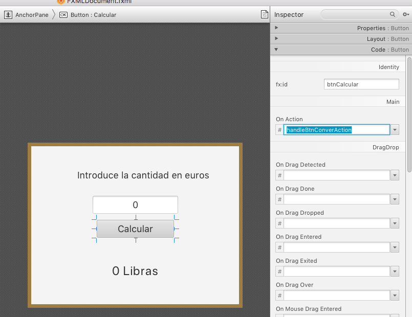
Solo queda probar que nuestra aplicación funciona correctamente:
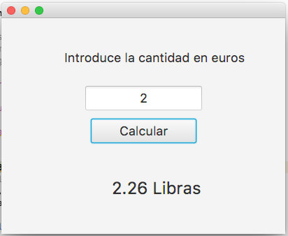